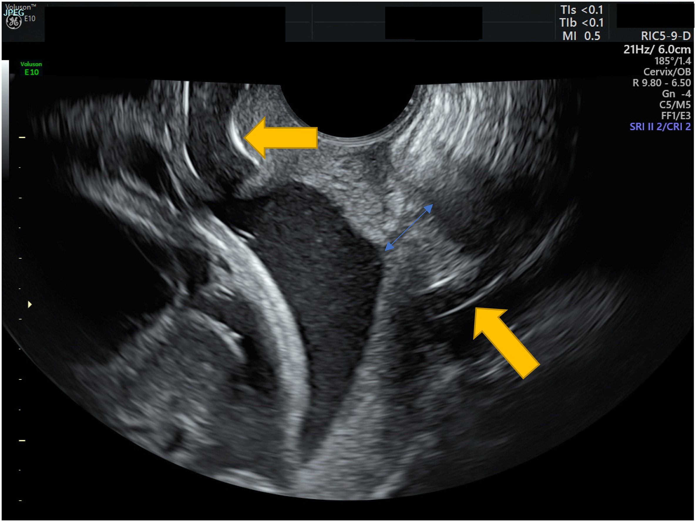
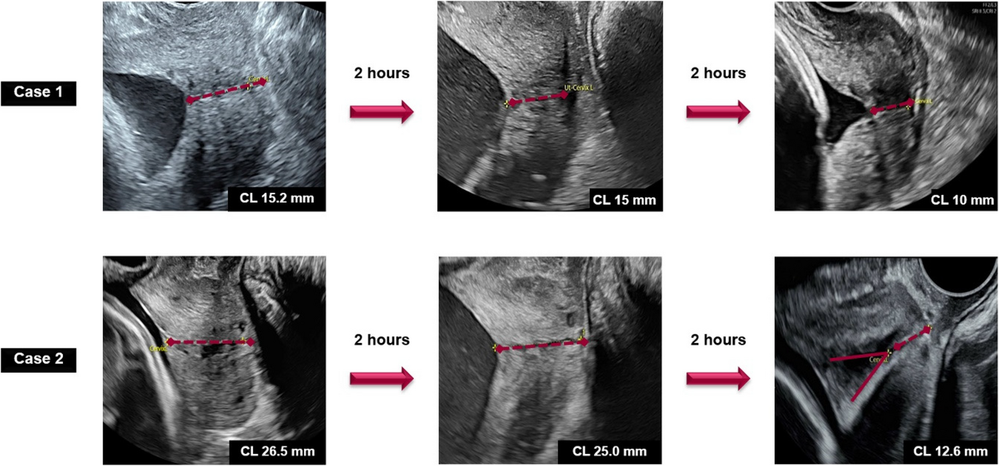
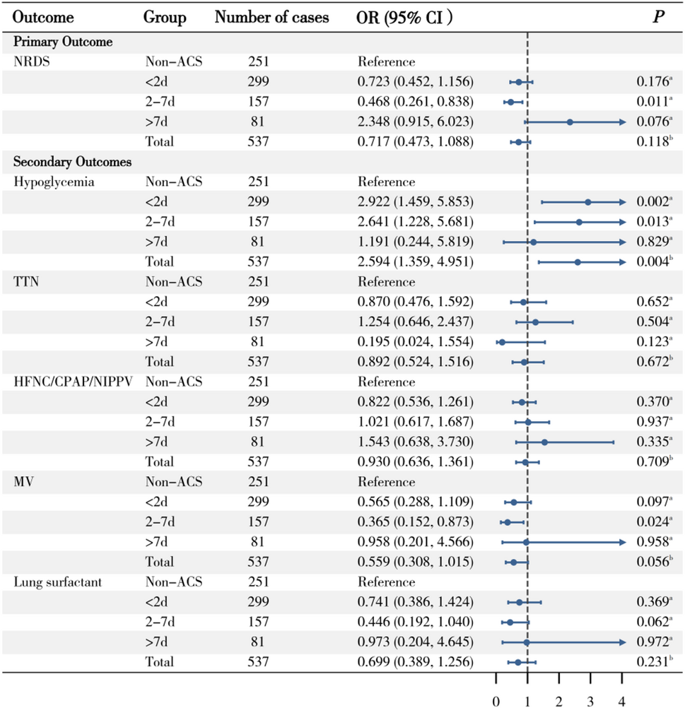

591 — Dự phòng sinh non theo nguy cơ: progesterone âm đạo, vòng nang cổ tử cung & corticosteroid / Risk-stratified preterm birth prevention: vaginal progesterone, cervical pessary and antenatal corticosteroids
Tags: pattern:sinh-non pattern:co-tu-cung-ngan pattern:du-phong-sinh-non vung:co-tu-cung vung:thai-nhi score:CL-25mm protocol:TVUS-co-tu-cung protocol:progesterone protocol:pessary-Arabin protocol:corticosteroid
Mức chắc chắn (certainty): tổng hợp y văn (literature synthesis) — tổng hợp 1 phân tích gộp vòng nang 2025 (17 RCT, 5.704 thai), 1 phân tích gộp progesterone 2024 (8 nghiên cứu, 2.741 thai), 1 RCT quản lý theo chiều dài cổ tử cung 2026, 1 đoàn hệ corticosteroid muộn 2026 và 1 đoàn hệ 7.950 trẻ sinh rất non 2025. Có phản biện vì các RCT vòng nang không đồng thuận.
1. Tổng quan bệnh học – cơ chế hình ảnh
- Sinh non tự phát (spontaneous preterm birth — sPTB): sinh trước 37 tuần 0 ngày. Cổ tử cung không phải “cái nắp thụ động”: trước khi ngắn, cổ đã tái cấu trúc (remodeling) — giảm collagen type I/III, tăng nước và glycosaminoglycan, tăng tế bào viêm. Vì vậy chiều dài cổ tử cung (cervical length — CL) chỉ là thước đo muộn của một quá trình đã bắt đầu.
- TẠI SAO hình ảnh học quyết định điều trị: mọi can thiệp dự phòng đều nhắm vào một trong ba tầng:
- Tầng nội tiết – viêm: progesterone làm giảm thụ thể oxytocin, giảm connexin-43 (gap junction), giảm IL-6/IL-8 → giữ cơ tử cung ở trạng thái “im lặng” và giảm chín cổ tử cung.
- Tầng cơ học: vòng nang Arabin đỡ đoạn dưới tử cung, làm thay đổi góc tử cung–cổ tử cung (uterocervical angle — UCA) và phân bố lại lực lên lỗ trong; vòng nang không làm dài cổ tử cung, nên đo CL sau đặt vòng không dùng để đánh giá hiệu quả.
- Tầng trưởng thành thai: corticosteroid qua nhau thai, tăng protein surfactant (SP-A/SP-B), tăng compliance phổi, giảm RDS/IVH/hoại tử ruột non. Hiệu ứng genomic cần ~24 giờ, nhưng có hiệu ứng non-genomic sớm — đoàn hệ 7.950 trẻ 23+0–31+6 tuần cho thấy lợi ích về tử vong xuất hiện từ 2 giờ sau liều đầu.
- Ngưỡng định lượng bắt buộc nhớ:
- CL ≤ 25 mm ở 16–24 tuần là ngưỡng vào của progesterone đơn thai; CL ≤ 20 mm là ngưỡng lợi ích rõ nhất trong các phân tích gộp; CL ≤ 10 mm + funneling/sludge là nhóm nguy cơ rất cao, phải loại trừ nhiễm trùng ối trước khi can thiệp.
- Progesterone âm đạo 200 mg/đêm (từ lúc chẩn đoán đến 36 tuần). Phân tích gộp 8 nghiên cứu, 2.741 thai đơn CL < 25 mm: sinh < 34 tuần OR 0,67 (95% CI 0,53–0,84); < 32 tuần OR 0,46 (0,28–0,77); vào NICU OR 0,45 (0,30–0,66); RDS OR 0,42 (0,28–0,63); IVH OR 0,40 (0,17–0,95); tử vong sơ sinh OR 0,25 (0,13–0,46).
- Vòng nang cổ tử cung: phân tích gộp 17 RCT, 5.704 thai. Ở song thai: sinh < 37 tuần RR 0,88 (0,81–0,96), < 34 tuần RR 0,79 (0,63–0,99). Ở đơn thai: không khác biệt có ý nghĩa cho sinh < 34 tuần; so trực tiếp với progesterone cũng không khác biệt. Trong phân nhóm song thai CL < 25 mm, sinh < 34 tuần RR 0,41 (0,16–1,06) — không có ý nghĩa.
- Corticosteroid muộn 34+0–36+6 tuần (788 thai đơn): chỉ nhóm 2–7 ngày trước sinh giảm RDS (OR 0,468; 0,261–0,838); < 2 ngày OR 0,723 (0,452–1,156)** — không có lợi; **> 7 ngày OR 2,348 (0,915–6,023) — không có lợi. Đổi lại, hạ đường huyết sơ sinh tăng: OR 2,594 (1,359–4,951), rõ ở < 2 ngày và 2–7 ngày.
- Quản lý theo CL ở dọa sinh non 24–33+6 tuần, CL 15–30 mm: RCT 50 thai — chiến lược chờ đợi + đo CL lặp giảm “điều trị không phù hợp” từ 98,5% xuống 7,7% (RR 0,08; 0,02–0,31), đồng thời giảm nhịp nhanh, tụt huyết áp, hạ kali và thời gian nằm viện.
- Corticosteroid sớm 23+0–31+6 tuần (7.950 trẻ): khoảng cách 12 giờ – 14 ngày là tối ưu; lợi ích tử vong bắt đầu trong 2 giờ → không trì hoãn steroid chỉ vì sắp sinh.
2. Mẫu hình + chẩn đoán phân biệt theo vị trí (Gamut)
- Mẫu hình 1 — cổ tử cung ngắn đơn thuần, không tiền sử: CL ≤ 25 mm, ống cổ thẳng, không phễu. Điều trị progesterone âm đạo; không đặt vòng nang, không khâu dự phòng đại trà.
- Mẫu hình 2 — cổ tử cung ngắn + tiền sử sinh non/sẩy muộn: đây là nhóm khâu cứu vãn theo siêu âm (ultrasound-indicated cerclage) có lợi nhất; progesterone vẫn có thể dùng song song. Bài 573 và 578.
- Mẫu hình 3 — ngắn + phễu/sludge: màng ối lồi vào ống cổ, đám echo dày quanh lỗ trong → nghĩ nhiễm trùng trong ối. Cấy ối/CRP trước, không khâu khi đang nhiễm trùng; progesterone không điều trị được nguyên nhân.
- Mẫu hình 4 — song thai có CL ngắn: cơ chế chính là căng quá mức tử cung, không phải suy cổ tử cung. Progesterone không giảm sinh non; khâu có thể có hại (RR 2,15); vòng nang có tín hiệu giảm sinh non trong phân tích gộp nhưng không rõ trong phân nhóm CL < 25 mm → chỉ định theo từng trung tâm, không phải chuẩn. Bài 569.
- Mẫu hình 5 — dọa sinh non có cơn co nhưng CL 15–30 mm: chờ đợi có đo CL lặp (mỗi 2–4 giờ khi còn co) và chỉ dùng corticosteroid/giảm gò khi CL giảm > 20% so với ban đầu hoặc < 15 mm. Đây là thay đổi thực hành lớn: không phải cứ “dọa sinh non” là tiêm steroid.
- Mẫu hình 6 — ối vỡ non (PPROM) < 34 tuần: corticosteroid + kháng sinh + magnesium sulfate bảo vệ não; không giảm gò kéo dài; theo dõi nhiễm trùng.
- Mẫu hình 7 — thai 34+0–36+6 tuần: corticosteroid chọn lọc (dự kiến sinh trong 7 ngày, PPROM, đái tháo đường cần cân nhắc); lợi ích chỉ rõ khi sinh trong 2–7 ngày, cái giá là hạ đường huyết.
- Mẫu hình 8 — sau khoét chóp/LEEP, dị dạng Müller: theo dõi CL sớm, khâu theo tiền sử nếu có chỉ định; không dựa vào một lần đo.
- Gợi nhớ “PROMPT”: Progesterone (đơn thai CL ≤ 25 mm) · Rescue cerclage (ngắn + tiền sử, hoặc cổ đã mở) · Obstetric history (số lần sinh non, sẩy muộn) · Measurement (TVUS 3 lần, lấy số ngắn nhất) · Pessary (chọn lọc, bằng chứng không đồng nhất) · Timing of steroids (12 giờ–14 ngày; 2–7 ngày ở muộn).
3. Bảng so sánh phân biệt (ma trận đối chiếu)
| Thực thể (entity) | Hình ảnh điển hình | Chốt vào (rule-in) | Chốt loại (rule-out) | Gợi ý xác nhận |
|---|---|---|---|---|
| Cổ tử cung ngắn đơn thuần | TVUS dọc: CL ≤ 25 mm, ống cổ thẳng, không phễu, không sludge | CL ≤ 25 mm đo 3 lần, lấy trị số ngắn nhất, bàng quang rỗng | CL ≥ 30 mm, không phễu, không tiền sử → không can thiệp | TVUS lặp 1–2 tuần; progesterone 200 mg/đêm |
| Ngắn + tiền sử sinh non | CL ≤ 25 mm + tiền sử sinh 16–34 tuần hoặc sẩy muộn | Tiền sử + CL ≤ 25 mm = nhóm lợi ích của khâu theo siêu âm | Không tiền sử, CL 20–25 mm → khâu không có lợi | Hồ sơ sản khoa + TVUS; bài 573/578 |
| Ngắn + phễu/sludge | Màng ối hình chữ V/U lồi vào ống cổ; đám echo dày quanh lỗ trong | Phễu > 50% chiều dài hoặc cổ còn lại < 10 mm + sludge | Ống cổ đóng hoàn toàn, dịch ối trong → không phải mẫu hình này | Cấy ối, CRP, IL-6 nếu cân nhắc khâu |
| Song thai CL ngắn | CL ≤ 25 mm, tử cung căng, thường kèm đa ối | Song thai + CL ≤ 25 mm → hội chẩn, không mặc định progesterone/khâu | Đơn thai cùng CL → progesterone có lợi | TVUS + đánh giá TTTS (bài 566/569) |
| Dọa sinh non CL 15–30 mm | Cơn co, CL trung gian, chưa có thay đổi nhanh | CL 15–30 mm không giảm thêm → chờ đợi, đo lặp | CL < 15 mm hoặc giảm > 20% → điều trị | Đo CL mỗi 2–4 giờ khi còn co |
| PPROM < 34 tuần | Thiểu ối, màng ối vỡ, có thể thấy túi ối xẹp | Vỡ ối xác định + < 34 tuần → steroid + kháng sinh + MgSO₄ | Còn nguyên ối → không phải PPROM | Soi âm đạo vô khuẩn, test IGFBP-1 |
| Thai 34+0–36+6 tuần | Thai gần đủ tháng, có cơn co/PPROM | Dự kiến sinh trong 2–7 ngày → cân nhắc steroid muộn | Sinh > 7 ngày hoặc không có chỉ định → không dùng | Đếm ngày dự kiến sinh; theo dõi đường huyết |
| Sau khoét chóp/LEEP | Cổ tử cung ngắn, biến dạng, sẹo xơ | Tiền sử phẫu thuật cổ + CL ngắn không tương xứng tuổi thai | Cổ dài ≥ 30 mm, không tiền sử → loại trừ nguyên nhân cấu trúc | Hồ sơ mổ + TVUS; MRI nếu cần |
- Ba cặp dễ nhầm nhất: (1) CL ngắn đơn thuần vs ngắn + tiền sử — cùng con số CL nhưng chỉ định khâu khác hẳn; (2) dọa sinh non vs cổ tử cung ngắn không triệu chứng — một bên là cơn co cấp, một bên là bất thường cấu trúc mạn; (3) steroid sớm vs steroid muộn — cùng thuốc nhưng ngưỡng tuổi thai và khoảng cách sinh quyết định lợi ích.
4. Protocol chụp + hệ phân độ/điểm chuẩn hóa
- Siêu âm đầu dò âm đạo (TVUS) — chuẩn vàng đo CL:
- Bàng quang rỗng, tư thế sản khoa, đầu dò đặt trong cùng đồ sau, không ấn ép.
- Mặt cắt dọc giữa thấy rõ lỗ trong – ống cổ – lỗ ngoài; đo 3 lần, lấy trị số ngắn nhất; tổng thời gian quan sát 3–5 phút để loại cơn co.
- Phễu (funneling): đo chiều dài phễu, chiều dài cổ còn lại (functional length) và độ rộng phễu; ghi rõ % chiều dài cổ bị phễu chiếm.
- Sludge: đám echo dày, không đều, sát lỗ trong — luôn mô tả vì làm đổi xử trí (ưu tiên tìm nhiễm trùng, trì hoãn khâu).
- Ai được sàng lọc CL: tiền sử sinh non/sẩy muộn → đo 16–24 tuần, lặp mỗi 2 tuần; sàng lọc toàn dân còn tranh cãi (2 RCT không giảm sinh non; đoàn hệ rất lớn có giảm nhưng chất lượng bằng chứng thấp).
- Progesterone âm đạo: 200 mg/đêm từ lúc chẩn đoán đến 36 tuần; thay thế bằng gel 90 mg/ngày nếu dung nạp kém. Không dùng cho song thai (không giảm sinh non) và không dùng khi CL > 25 mm.
- Vòng nang Arabin: chọn cỡ 65/70/75/80 mm theo đường kính âm đạo; đặt 18–22 tuần (hoặc ngay khi phát hiện CL ngắn), tháo 37 tuần. Theo dõi tiết dịch âm đạo, nhiễm trùng, vòng rơi; không dùng thay thế khâu ở nhóm có chỉ định khâu.
- Corticosteroid: betamethasone 12 mg IM × 2, cách 24 giờ hoặc dexamethasone 6 mg IM × 4, cách 12 giờ. Chỉ định kinh điển 24–34 tuần khi có nguy cơ sinh trong 7 ngày; 34+0–36+6 tuần cân nhắc chọn lọc. Không lặp nhiều đợt; nếu > 14 ngày và còn < 34 tuần, có thể một đợt nhắc lại. Theo dõi đường huyết ở đái tháo đường/thai kỳ.
- Magnesium sulfate bảo vệ não: cân nhắc khi sinh < 32 tuần (liều tải + truyền duy trì theo phác đồ địa phương).
- Giảm gò (tocolysis): chỉ để kéo dài 48 giờ đủ cho steroid, không điều trị duy trì; không dùng khi PPROM hoặc nhiễm trùng ối.
flowchart TD
A["Thai 16-24 tuan: do CL bang TVUS"] --> B{"CL <= 25 mm?"}
B -->|"Khong"| C["Theo doi thuong quy; khong progesterone"]
B -->|"Co"| D{"Tien su sinh non hoac say muon?"}
D -->|"Co"| E["Khau theo sieu am + progesterone; danh gia pheu/sludge"]
D -->|"Khong"| F{"Song thai?"}
F -->|"Khong"| G["Progesterone 200 mg/em den 36 tuan"]
F -->|"Co"| H["Hoi chan: progesterone khong loi; khau co the hai; vong nang chon loc"]
E --> I{"Sludge hoac pheu > 50%?"}
G --> I
H --> I
I -->|"Co"| J["Cay oi/CRP; khong khau khi nhiem trung"]
I -->|"Khong"| K["Theo doi CL moi 1-2 tuan"]
J --> L{"24-34 tuan va nguy co sinh trong 7 ngay?"}
K --> L
L -->|"Co"| M["Betamethasone 12 mg x2 cach 24h"]
L -->|"Khong"| N{"34+0-36+6 tuan?"}
N -->|"Co"| O["Can nhac steroid muon neu sinh trong 2-7 ngay"]
N -->|"Khong"| P["Khong steroid; theo doi"]

Mũi tên vàng: vòng nang Arabin tại eo tử cung; mũi tên xanh: chiều dài cổ tử cung đo được. Ảnh dùng nguyên bản (CC BY-NC-ND, không crop/ghép). Nguồn: Case Reports in Women's Health 2022 (PMC9385544), CC BY-NC-ND 4.0.5. Biến thể bình thường và cạm bẫy
- Biến thể bình thường:
- Cổ tử cung dài 30–40 mm, hơi cong; có thể ngắn giả khi bàng quang căng hoặc khi có cơn co đoạn dưới.
- Phễu nhẹ có thể thoáng qua trong cơn co; luôn đo lại sau khi hết co.
- Dịch trong ống cổ không phải sludge nếu không có echo dày, không kèm cơn co/CRP tăng.
- Cạm bẫy (pitfall):
- Ấn đầu dò làm cổ ngắn giả — lỗi phổ biến nhất; đo lại với áp lực tối thiểu.
- Đo bằng đường bụng khi bàng quang đầy → CL dài giả, bỏ sót cổ ngắn. TVUS là bắt buộc.
- “Cứ dọa sinh non là tiêm steroid”: RCT cho thấy chờ đợi + đo CL lặp giảm 92% điều trị không phù hợp; steroid < 2 ngày không giảm RDS ở thai muộn và tăng hạ đường huyết.
- Khâu ở song thai: không có lợi, có thể hại (RR 2,15); khác hoàn toàn đơn thai.
- Progesterone ở song thai hoặc CL bình thường: không giảm sinh non; đừng “cho cho chắc”.
- Vòng nang không phải “khâu thay thế”: bằng chứng đơn thai yếu, song thai không đồng nhất; không dùng để trấn an khi có chỉ định khâu.
- Bỏ sót nhiễm trùng ối: sludge + cổ mở nhanh + CRP tăng → cấy ối; đặt khâu vào ổ nhiễm trùng làm tăng nguy cơ.
- Nghỉ ngơi tại giường: không giảm sinh non, tăng nguy cơ huyết khối — không khuyến cáo.
6. Tự lượng giá — Blind Quiz
Ca 1 — Thai 22 tuần, tiền sử khoét chóp cổ tử cung, CL 18 mm. Ảnh TVUS có vòng nang.
- Gợi ý: thai phụ không co, không ra dịch, CRP bình thường.
- Câu hỏi: Cấu trúc mũi tên vàng là gì? Đo gì ở mũi tên xanh? Vì sao vòng nang không thay thế khâu ở bệnh nhân này?
Bấm để hiện đáp án (findings + chẩn đoán)
- Mũi tên vàng: vòng nang Arabin nằm ở eo tử cung, hai cánh áp vào cùng đồ sau và đoạn dưới tử cung.
- Mũi tên xanh: chiều dài cổ tử cung còn lại (functional length), đo từ lỗ ngoài đến lỗ trong; đây là số quyết định, không phải khoảng cách từ vòng nang đến lỗ ngoài.
- Bệnh nhân có tiền sử phẫu thuật cổ + CL 18 mm → nhóm lợi ích của khâu theo siêu âm; vòng nang chỉ là lựa chọn thay thế khi không khâu được, không tương đương.
- Nguồn: Case Reports in Women's Health 2022 (PMC9385544), CC BY-NC-ND 4.0.
Ca 2 — Thai 28 tuần, dọa sinh non, CL đo lặp mỗi 2 giờ.

- Gợi ý: hai bệnh nhân (Case 1 và Case 2) đều có cơn co; số đo ghi trên ảnh.
- Câu hỏi: Ai nên nhận corticosteroid? Dấu hiệu nào khiến bạn đổi từ “chờ đợi” sang “điều trị”?
Bấm để hiện đáp án (findings + chẩn đoán)
- Case 1: CL 15,2 → 15 → 10 mm — giảm > 20% và xuống < 15 mm → điều trị (corticosteroid + giảm gò).
- Case 2: CL 26,5 → 25,0 → 12,6 mm — giảm mạnh trong vài giờ → cũng điều trị, dù lần đo đầu còn 26,5 mm.
- Nguyên tắc: không dựa vào một lần đo; theo dõi xu hướng và ngưỡng < 15 mm hoặc giảm > 20%.
- Nguồn: Chaiyakarn S et al., BMC Pregnancy Childbirth 2026 (PMC13531936), CC BY-NC-ND 4.0; ảnh nguyên bản.
Ca 3 — Thai 35 tuần 2 ngày, dọa sinh non, dự kiến sinh trong 5 ngày.

- Gợi ý: so sánh 3 nhóm < 2 ngày, 2–7 ngày, > 7 ngày với nhóm không dùng corticosteroid.
- Câu hỏi: Có nên tiêm corticosteroid? Lợi ích và tác hại chính trên biểu đồ là gì?
Bấm để hiện đáp án (findings + chẩn đoán)
- Có thể cân nhắc vì dự kiến sinh trong 2–7 ngày: nhóm 2–7 ngày giảm RDS OR 0,468 (0,261–0,838) và giảm thở máy OR 0,365 (0,152–0,873).
- Tác hại: hạ đường huyết sơ sinh tăng OR 2,594 (1,359–4,951), rõ ở < 2 ngày và 2–7 ngày; < 2 ngày không giảm RDS (OR 0,723; 0,452–1,156).
- Kết luận: steroid muộn không phải “tiêm cho đủ liều” — phải cân nhắc thời điểm sinh và theo dõi đường huyết.
- Nguồn: BMC Pregnancy Childbirth 2026 (PMC13134313), CC BY-NC-ND 4.0; ảnh nguyên bản.
Bài liên quan chéo
- 579 – Dự báo sinh non bằng cấu trúc cổ tử cung: UCA, elastography & thể tích 3D (dự báo trước khi quyết định dự phòng)
- 569 – Sinh non trong song thai: dự phòng & theo dõi (progesterone/vòng nang/khâu ở song thai)
- 573 – Hở cổ tử cung & bán khâu: theo dõi siêu âm cổ tử cung (chỉ định khâu, kỹ thuật McDonald)
- 578 – Bán khâu qua ngả bụng (TAC/LCC) & thất bại bán khâu qua âm đạo
- 560 – Nhau cài răng lược (PAS) cấp cứu sản (chảy máu, sinh non do nhau)
- 550 – Thai sớm, sẩy thai & thai ngoài tử cung
Không dùng để chẩn đoán độc lập khi chưa có người hướng dẫn.